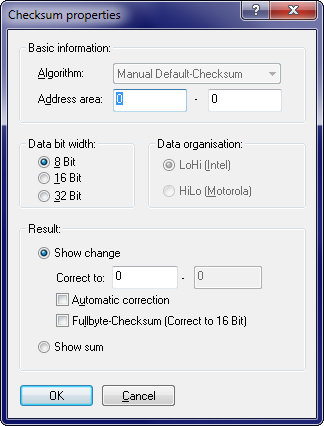

|
The dialog Checksum properties |

  
|
|
The dialog Checksum properties |
|

Use this menu to edit the parameters for the selected checksum. For automatically found checksums most parameters are controlled by the program. In case of a manual configuration you can edit several parameters.
Algorithm |
The selected algorithm |
Address area |
The checksum is calculated from this area in the project. |
Data bit width |
Specifies whether 8 or 16 bit data will be taken from the project |
Data organisation |
Describes how the data is organised, if 16 bit data is used. |
Correct to |
The checksum is written to this target address. For so-called "Fullbyte" Checksums (see below for details) (possibly large) data ranges will be modified to keep the checksum correct. |
Automatic correction |
If this checkbox is activated any changes in the address area will result in a correction of the checksum. |
Fullbyte Checksum |
Activates the so-called "Fullbyte" Checksums (see below for details) |
With this dialog you may view the individual checksums that have been automatically recognised or you may add and edit your own manual checksums.
The manual default-checksum is a so-called additive checksum. It is calculated by simply adding all values in the address range. As a consequence it is possible to correct changes without knowing the further details, like the exact position of the checksum.
To achieve this, you simply must enter an address range that includes all your changes and at the same time is smaller than the checksum range defined by the manufacturer. (As you see, it’s better to define this range smaller than larger.) For the correct-to address just choose the next address after the address area you’ve entered. If you now make changes, the values at the correct-to address are changed in such a way that the total sum stays constant. You may also choose to only display the sum and keep this value constant yourself. In this case you don’t need to enter the target address (and some other things).
Fullbyte Checksums:
This is a variant of the normal checksum where the width of the register is wider that the data. So, if you’re working with 8-Bit data, then the actual addition is performed in a 16-bit register (for 16-bit data a 32-bit register). The difference lies in the calculation of the carry which is performed much later for fullbyte checksum. If you increase the data of a normal 8-bit checksum by 300, you only have the decrease the data by 44 (300-256) at another point. For fullbyte checksums you must subtract the entire 300 at a difference place. That is the reason why you must specify an address range as target.
Fullbyte Checksums in the daily work:
For this type, enter a target range instead of a target address. If you increase the value of data, data in the target range will be decreased and vice versa. The required size of the target range depends on how much you modify and how far the current values in the target range can be modified.
Important:
he target address / the target range may not be within the address range that is checked, but must necessarily be within the range that is used by the ECU calculation software.
Note about addresses:
The addresses in this dialog do not refer to the current element, but to the addresses like they are visible in the view <All elements>. This makes actions possible which apply to the data of multiple elements at once.
Shortcuts
| Symbol bar: | - |
| Keyboard: | - |